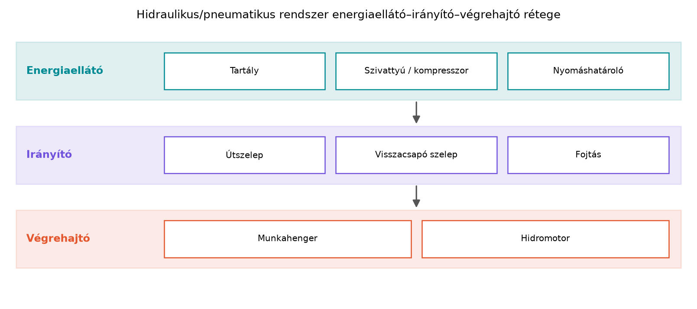

A hidraulikus vagy pneumatikus kapcsolási rajz első ránézésre bonyolult ábra, pedig pontosan az a feladata, hogy a munkalapon is gyorsan megmutassa: honnan jön a nyomás, melyik szelep merre engedi a közeget, és melyik munkahenger végez erőhatást. A későbbi fejezetekben – például a fékrendszernél, a szervokormánynál vagy a légfékeknél – mindig ilyen rajzból kell dolgoznod.
Képzelj el egy műhelyhelyzetet: a fékpedál hosszú úton süllyed, a műszerfalon világít a fékrendszer visszajelzője. A szerelő kinyitja a gyártói javítási utasítást, és a kétkörös fék hidraulikus vázlatát nézi. A rajzon a tandem főfékhengerből két, eltérő vonallal jelölt kör indul; a bal első és a jobb hátsó fék egy körben van, a másik kör a másik két kereket táplálja. A rajzon azonnal látszik: ha az egyik kör nyomása megszűnik, a másik kör két keréken továbbra is fékez. A jelölések, a szelep- és hengerjelek ismerete nélkül a hibakeresés csak találgatás; velük viszont a tünetből célzott mérés lesz.
Definíció. A hidraulikus rendszer zárt rendszerben áramló folyadékkal (hidraulikaolaj, fékfolyadék) továbbít energiát; a pneumatikus rendszer sűrített levegővel.
Definíció. A nyomás a felületre ható erő és a felület hányadosa:
ahol a nyomás Pa vagy bar egységben, az erő N-ban, a felület m²-ben. A gyakorlatban , a hidraulikában gyakran 5–20 MPa, pneumatikában jellemzően 0,6–1 MPa közötti üzemi nyomásról beszélünk (ellenőrizendő: a jármű vagy gép gyártói adata).
Összefüggés. Pascal-törvény (zárt nyugvó folyadékban a külső nyomás minden irányban veszteség nélkül terjed):
A hidraulikus rendszer tehát erőáttételt valósít meg: kis dugattyúra kifejtett kis erőből nagy dugattyún nagy erő lesz. A térfogatáram – és ezzel a mozgás – fordítva arányos: ahol az erő nő, ott az elmozdulás kisebb.
Összefüggés. A dugattyú felülete kör keresztmetszet esetén:
Megjegyzés. A hidraulikaolaj gyakorlatilag összenyomhatatlan, ezért a fékpedál útja elsősorban a folyadék elmozdításától és a csövek rugalmasságától függ; a levegő összenyomható, ezért a légfékrendszerben tárolóra és nagyobb munkahengerekre van szükség.
A hidraulikus és pneumatikus kapcsolási rajzok nem a tényleges alkatrész kinézetét mutatják, hanem a funkciót: mi táplálja, mi vezérli, mi hajtja végre az energiát. A jelképek az ISO 1219 szabványcsaládon alapulnak; a részleteket a gyártói rajz és az aktuális szabványváltozat dönti el (ellenőrizendő: ISO 1219-1 és ISO 1219-2, valamint a gyártói rajzjelkulcs).
A rendszer elemeit három csoportra bontjuk:
Az alábbi ábra csak a rendszer szerkezeti rétegződését mutatja; a tényleges kapcsolási rajz ezen túl a vezetékek, a csatlakozók és a szelepállások pontos kapcsolatát is tartalmazza.

A diagramon a nyíl iránya az energia útját mutatja: a tartályból és a szivattyúból kiinduló közeg az útszelepen keresztül jut a munkahengerhez.
A hidraulikus rajz legfontosabb irányító eleme az útszelep. A jelölés tömör, de pontos rendszert követ.
Az útszelepet mezők (négyzetek) jelölik; egy mező egy kapcsolási állást mutat. A két szám a kapcsolatok és az állások számát adja meg:
Szabály. A rajzjelet úgy olvasd, hogy a nyugalmi állás (amelyet a rugó vagy a nyugalmi helyzet jele mutat) az egyik mező; a másik mező a működtetett állás. A mezőkben a nyilak a közeg áramlási útját, a zárt vonal (T alak) a lezárt csatlakozót jelzi.
Példa. Egy 3/2 útváltó, rugóval visszatérített, elektromosan működtetett jelének szöveges leírása: bal mezőben a P (nyomó) ág a T (tartály) felé zárt, a munkaág A a tartály felé nyitott; jobb mezőben P az A felé nyitott, T zárt. A jel melletti rugószimbólum mutatja, hogy áramtalanított állapotban a bal mező érvényes.
A további gyakori rajzjelek:
| Elem | Rajzjel lényege | Mit tesz |
|---|---|---|
| Szivattyú | kör, benne a kimenet felé mutató háromszög (hidraulikus: teli, pneumatikus: üres; ellenőrizendő: ISO 1219-1) | folyadékot szállít, nyomást épít |
| Kompresszor | kör, benne háromszög, a bemenő oldalnál szívójel | sűrített levegőt termel |
| Munkahenger | dugattyú és dugattyúrúd jele | erőt és elmozdulást hoz létre |
| Hidromotor | mint a szivattyú, de a háromszög csúcsa a bemenet felé mutat | forgó mozgást ad |
| Visszacsapó szelep | ülékre (V-alak) támaszkodó golyó (kör), rugóval vagy anélkül | csak egy irányba enged |
| Nyomáshatároló | egy mező, benne nyíl és rugó | a beállított nyomás felett leürít |
| Fojtás | keskeny szakaszon átvezető jel | áramlási ellenállást, nyomásesést hoz létre |
| Tartály | nyitott vagy zárt edény | rendszer folyadék- vagy levegőtartálya |
A betűjelek a hidraulikus és pneumatikus rajzokon is gyakoriak: P a nyomóág, T vagy R a tartály/visszafolyó ág, A és B a munkaágak. A fékrendszer rajzain ezek helyett a járműgyártók az áramútrajzokon megszokott egyedi jelöléseket is használhatnak, ezért mindig a rajz jelkulcsát nézd meg.
Az alábbi ábra egy rugóval középre állított, két oldalon elektromágnessel (Y1, Y2) működtetett 4/3 útváltó jelét mutatja nyugalmi (középső) állásban, kettős működésű munkahengerrel: a bal mezőben P→A és B→T párhuzamos nyilak, a középső mezőben mind a négy csatlakozó zárt (T alakú jelek), a jobb mezőben P→B és A→T keresztezett nyilak. Alul a szivattyú (teli háromszög a kimenet felé), a nyomáshatároló és a tartály. A HTML-kiadásban a vezérlés (Y1 / nincs / Y2) választható: a működő mező a csatlakozók elé csúszik, és látszik a dugattyú mozgása.
Kétkörös hidraulikus fék vázlata. A rajzon a tandem főfékhenger két dugattyúja két körbe táplál fékfolyadékot. Az egyik kör a bal első és a jobb hátsó, a másik a jobb első és a bal hátsó kerékfékhez vezet; ez a megosztás csökkenti annak a veszélyét, hogy egy kör hibája után teljesen fék nélkül maradjon a jármű (a gyártó más körfelosztást is használhat). A kerékfékek munkahengerként jelennek meg, az ABS-hidraulikaegység pedig az útszelepek és a visszacsapó szelepek csoportjaként.
Az átlós (X) felosztást felülnézetben mutatja az alábbi ábra: az 1. kör (folytonos vonal) a bal első és a jobb hátsó, a 2. kör (szaggatott vonal) a jobb első és a bal hátsó kerékfékhez vezet a tandem főfékhengerből az ABS-egységen át. Ha az 1. kör eltörik, a jobb első és a bal hátsó kerék fékez tovább. A HTML-kiadásban bármelyik kör „eltörhető”, és átlós vagy tengelyenkénti (II) felosztás választható.
Szervokormány vázlata. A szivattyú a tartályból szív, a fogasléces kormányműben lévő irányító szelep a kormányzási iránynak megfelelően nyit; a rásegítő munkahenger a fogaslécbe épített dugattyú. A fojtás a kormányzás sebességét csillapítja; a nyomáshatároló védi a rendszert.
Légfék vázlata. A kompresszor a légtartályt tölti, a nyomásszabályzó-leválasztó a beállított nyomást tartja. A fékpedálszelep a vezérlőnyomást arányosan engedi a pótkocsi vezérlő köréhez vagy a kerékfékmunkahengerekhez. A négykörös védőszelep elválasztja egymástól a köröket, így sérült kör leválasztható és a többi kör működőképes marad.
1. példa (hidraulikus emelő). Adott: egy kézi hidraulikus emelőben a kis henger dugattyúátmérője , a nagy hengeré . A kis dugattyúra erőt fejtünk ki. Keresett: a nagy dugattyún elérhető erő. Képletek: , , , .
Behelyettesítés:
Ellenőrzés: a felületviszony , tehát az erő nagyságrendje , így az eredmény reális.
2. példa (pneumatikus henger). Adott: egy légfék munkahengere dugattyúátmérőjű, a rendszernyomás . Keresett: a dugattyúrúdon kifejtett elméleti erő. Képlet: , .
Behelyettesítés:
Ellenőrzés: a gyakorlatban a henger vesztesége miatt az effektív erő ennél kisebb; a példaérték a méretezés kiindulópontja.
A rajzolvasás ellenőrzésére is vonatkozik a rajz–jármű–mérés hármas: rajzolj ki egy kört, azonosítsd a járművön az elemeket, és mérd meg a munkapontokat. Az ellenőrzőlista:
Előírás. A hidraulikus és pneumatikus kapcsolási rajzok a gépészeti rajzszabványok hatálya alá tartoznak; a jelképek, a vezetékjelölések és a kapocsjelölések megfelelőségét a gyártói rajzjelkulcs és a vonatkozó szabvány határozza meg (ellenőrizendő: ISO 1219-1/ISO 1219-2 és a gyártói dokumentáció aktuális változata).
Tünet: egy haszonjármű légfékrendszerében a pótkocsi fék csak nagyon lassan old. A szerelő a javítási utasítás légfék-vázlatát nézi. A rajz szerint a vezérlővezeték (sárga csatlakozófej) a pótkocsi-fékszelepet vezérli, amely a pótkocsi saját légtartályából tölti a munkahengereket; oldáskor a fékszelep, illetve a gyorsoldó szelep ereszti szabadba a levegőt. A tünet arra utal, hogy a munkahengerekből a levegő nem tud megfelelő sebességgel távozni; a lehetséges ok a beragadt gyorsoldó (relé-) szelep vagy eltömődött kiömlőnyílás (ellenőrizendő: gyártói légfékrajz). A nyomást a rajz által megadott mérési pontokon – a vezérlővezetéken és a munkahenger csatlakozóján – mérik, és összehasonlítják az oldási idő alatti nyomáslefutást. A hibás szelep cseréje után az oldási idő visszaáll. Tanulság: a rajz választja ki, hol mérj, és a hibát a rendszer szintjén tünteti fel.
1. feladat (A). Nevezd meg a hidraulikus/pneumatikus kapcsolási rajz három fő csoportját, és mindegyikből mondj két példát.
2. feladat (A). Egy hidraulikus henger dugattyúátmérője ; a munkaági nyomás . Számítsd ki az elméleti dugattyúerőt kN-ban.
3. feladat (B). Egy hidraulikus sajtó kis hengere , nagy hengere . A kis dugattyúra erőt fejtenek ki. Mekkora a nagy dugattyún elérhető erő, és mekkora a rendszer nyomása?
4. feladat (B). Rajzold le szövegesen egy 4/3 útváltó középső állását, ahol P, T, A, B mind zárt, és írd be a kapocsjeleket. Mit mondhatsz a munkahengerről ebben az állásban?
5. feladat (C). Kétkörös hidraulikus fékrendszerben a bal első kör csöve eltört, a fékfolyadék elfolyt. A rajz szerint a bal első a jobb hátsóval van közös körben. Melyik kerekeken marad üzemi fék? Válaszodat a rendszer rajzi felépítésével indokold.
6. feladat (D). Légfékrajz alapján a pótkocsi fék nyomásnövekedése lassú, de a vontató munkahengerei gyorsan töltődnek. Mit ellenőriznél először a rajz segítségével? Fogalmazd meg a hibakeresési láncot.
Önellenőrzés – válaszok
1. feladat megoldása. Energiaellátó: szivattyú, kompresszor, tartály; irányító: útszelep, visszacsapó, fojtás; végrehajtó: munkahenger, hidromotor.
2. feladat megoldása. ; ; ; .
3. feladat megoldása. ; ; ; .
4. feladat megoldása. Középső mezőben P, T, A, B mind zárt vonallal van jelölve; a munkahenger nem tud befelé vagy kifelé áramlani, ezért a dugattyú hidraulikus reteszeltséget ad – ez a tipikus középső zárt állapot.
5. feladat megoldása. A törött cső a bal első – jobb hátsó kört üríti ki, ezért ezen a két keréken nincs üzemi fék. Működőképes marad a másik kör: a jobb első és a bal hátsó kerékfék. A jármű fékezhető, de a fékerő kisebb és átlós elosztású, ezért a pedálút megnő, és a jármű fékezéskor kissé félrehúzhat; a fékrendszer visszajelzője (folyadékszint) világít. A javításig a járművet nem szabad üzemeltetni.
6. feladat megoldása. Először a rajz pótkocsi vezérlő körét nézzük: fékpedálszelep, pótkocsi vezérlő szelep, vezérlővezeték, csatlakozófej, pótkocsi-fékszelep (relészelep). A tünet alapján a vontató oldala ép, ezért a pótkocsi oldali nyomásépítést vizsgálnám: a pótkocsi légtartályának töltöttségét, a szűrőt és a fékszelep működését. A lánc: tünet rögzítése → rajz szerinti mérési pontok kijelölése → a csatlakozófej (vezérlő) nyomásának mérése → a munkahenger-csatlakozó nyomásának összehasonlítása → hibás relészelep, eltömődött szűrő vagy vezeték azonosítása → csere → próba, oldási és töltési idő ellenőrzése → megelőzés: légtartály és szűrő ellenőrzése (gyártói légfékrajz szerint, ellenőrizendő).
A hidraulikus és pneumatikus kapcsolási rajz az energia útját mutatja: energiaellátó, irányító és végrehajtó elemek jelképeivel. A nyomás , a Pascal-törvény szerint zárt nyugvó folyadékban a nyomás minden irányban terjed, ezért kis felületről nagy felületre erőáttétel valósítható meg. Az útszelepek mezői a kapcsolási állásokat jelölik; a 2/2, 3/2, 4/3 jelölésben a kapcsolatok és az állások száma szerepel. A visszacsapó szelep egyirányú áramlást enged, a nyomáshatároló a maximális nyomást korlátozza, a fojtás áramlási ellenállást hoz létre. A gyári fék-, kormány- és légfékrajzokat e jelképekből olvasod ki, és a szerkezeti munkálatoknál mindig a gyártói javítási utasítással és a mérési pontokkal együtt értelmezed. Továbbvitt eredmény. A hidraulikus rajzolvasást használjuk a A hidraulikus fékrendszer: főfékhenger, kétkörös elrendezés, fékrásegítés, fékfolyadék, a Légfékek és pótkocsifékek, a Hidraulikus rendszerek és a szervokormány diagnosztikája és a Gépkezelő általános ismeretei: hidraulika, pneumatika, gazdaságos üzemeltetés, adminisztráció, hibaelhárítás alfejezetekben.
Forrástípusok: ISO 1219 szabványcsalád (hidraulikus és pneumatikus rajzjelek), gyártói javítási utasítások és kapcsolási rajzok, gépészeti rajz tankönyvek. A konkrét szabványszámok, kapocsjelölések, üzemi nyomásértékek és a fékrendszerek körfelosztása gyártó- és típusfüggő; a könyvben szereplő értékek tanulási példák. Ellenőrizendő: ISO 1219-1/ISO 1219-2 pontos megnevezése és hatályos kiadása, a hidraulikus/pneumatikus nyomások, a járműgyártói fékrajzi jelölésrendszer.